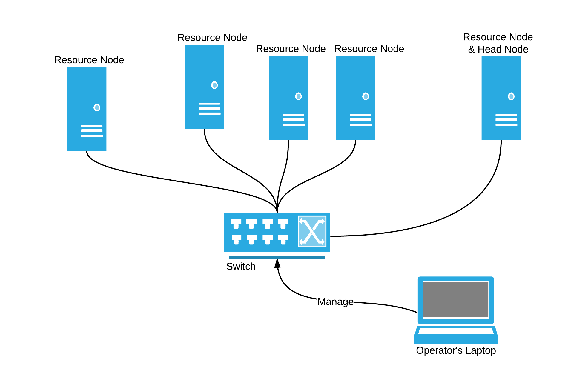

Ultimate Cloud OS for Data Center
[Open this slide in new window]
DogeOS is a distribution based on SmartOS and FIFO project. It is made to be the ultimate cloud OS for data center.
- All industry proven features of SmartOS: ZFS, Dtrace, KVM, Zones and Crossbow.
- Ready-to-use management console from FIFO.
- Nearly 100% resource utilization of hardware.
- No installation time for Resource Node (a.k.a chunter node).
- Guided, fast (< 10min) provision of the first FiFo (management) zone, and works even without Internet access.
DogeOS is, as similar to Project FiFo and SmartOS, licensed under CDDL. It is free to use.
How To Boot Your Data Center
System Requirement
Generally X86_64 servers with hardware virtualization support (Intel VT-x/EPT) will do. Same as the SmartOS. [Find it here].
Prepare the DogeOS Live on
- Burn the ISO to a DVD.
- Boot your server (or VirtualBox VM) with the DVD.
gunzip dogeos-usb.img.gz, and write USB img to a USB drive > 2GB.- Boot your server with the USB drive.
Connect your Servers to form a Cloud

- Simply connect all your servers to your switch. They are all
Resource Node, which will be VM farm. - Select any of your servers to host a special VM(FiFo zone) for management system.
Boot Your Data Center
NO ACTIONS NEED! After the live system booted, it works!
(check chunter with svcs chunter).
The default password for root of DogeOS is the same as SmartOS. Find it in the file /platform/root.password of DogeOS Live.
- Select any baremetal box, after DogeOS booted, as root login, and in bash type:
/dogeos/bin/fifozone-install↵.
- Follow the instructions, and wait it finish. During this you will assign your admin account
password, and theyour-fifo-zone-ipwill be shown in the final congratulation message box.
- Then you are done! Go to
http://<your-fifo-zone-ip>to manage your cloud (with thepassword)!
Support, Discuss & Report Bugs
It is a GitHub project. So click the top-left github link, go there!
Or if you just want some quick chat or say hello, it may help to join our IRC channel #dogeos.
Links
- SmartOS: Homepage | Github Repo
- FIFO Project: Project Page | Github Repo